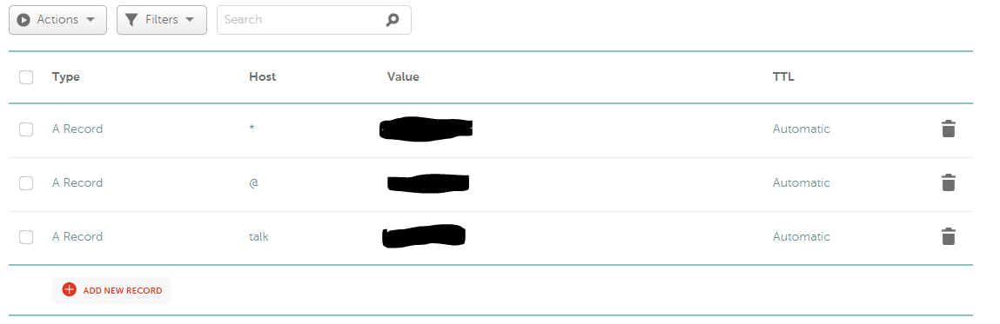
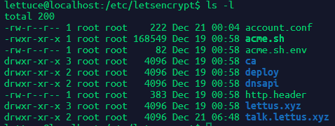
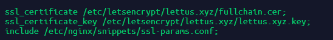

Adding Talk to Ghost
Back when this blog still ran on Ghost, I added Mozilla Coral Project’s Talk to Ghost, and…
Legit, adding Talk to Ghost is not as straightforward as the documentation. While the Quick Start is simple enough on running Talk on your own server, what they don’t mention is the amount of overhead setup that comes with it. Being a noob to Ghost, NGINX and hosting a blog on my own server made the setup experience frustrating for me. But persistence prevailed, we now have comments!
Talk is cool, I like Talk.
So, how does this work?
For this, I am using Docker. It saves time from having to compile code and dependencies.
Setup a talk subdomain for the site
Coral recommends that we use something along the line of talk.domain.com. This configuration not only needs messing around with NGINX but also setting up a subdomain routing with your DNS server. Since I bought my domain from Namecheap, they’ve got a guide on adding a subdomain.

Once that is configured, I added SSL and routing in my NGINX configurations. One point to note here is that to setup SSL successfully, I’ve found that you have to wait for the DNS configuration to take effect. Namecheap says it could take anywhere up to 30 minutes for their system.
Create a folder to put the configuration files
From this point onwards, I work out of a folder with path /var/www/talk.lettus.xyz owned by and editable by my non-root username. In this folder, I create a .well_known folder. I’m not sure if the following step’s script creates it for me, so I just make one anyway in case ghost-cli created it. It’s used for manual verification that the DNS you’re creating a SSL certificate for is indeed pointing to your server.
Add SSL to the new subdomain
You can also use certbot for this step.
When setting up my blog, Ghost also setup SSL with LetsEncrypt. Behind the scenes, ghost-cli talks to the ACME client script. You don’t have to download/install the tool as Ghost already did this for you. The script at the time of this post (Dec 2018) sits in /etc/letsencrypt folder on your server.

Working out of /etc/letsencrypt, you’d follow the instructions on ACME’s Git README from step 2 to 3. In step 3, paths to key.pem and cert.pem needs to be specified. Ghost uses *.cer and *.key for the cert.pem and key.pem files respectively as evident in their pre-configured SSL NGINX configuration file.

I then cloned Ghost’s auto-generated NGINX configuration files into my /var/www/talk.lettus.xyz folder and modify them, editing the server_name, root, ssl_cetificate, ssl_certificate_key and proxy_pass parameters. The location for proxy_pass should point to your Talk’s server location. For me, it is http://127.0.0.1:3000, which we can find out in the next step. At the end of this step, my SSL configuration file looks like the following block.
server {
listen 443 ssl http2;
listen [::]:443 ssl http2;
server_name talk.lettus.xyz;
root /var/www/talk.lettus.xyz;
ssl_certificate /var/www/talk.lettus.xyz/cert.pem;
ssl_certificate_key /var/www/talk.lettus.xyz/key.pem;
include /etc/nginx/snippets/ssl-params-no-frame.conf;
location / {
proxy_set_header X-Forwarded-For $proxy_add_x_forwarded_for;
proxy_set_header X-Forwarded-Proto $scheme;
proxy_set_header X-Real-IP $remote_addr;
proxy_set_header Host $http_host;
proxy_pass http://127.0.0.1:3000;
}
location ~ /.well-known {
allow all;
}
client_max_body_size 50m;
}
A bit later on, you are going to configure Talk to allow its content to be displayed on your page. By default, NGINX’s SSL configuration sets X-Frame-Options to SAMEORIGIN. While this is what you usually want, this setting won’t allow Talk’s comment HTML to be loaded at all. Talk server will check the sites for you anyway. So to fix this, you gotta edit 1 line in NGINX’s ssl-params.conf file. To preserve default configurations for our blogs, I duplicated the ssl-params.conf and placed it in the same folder (/etc/nginx/snippets/) with a new name ssl-params-no-frame.conf and commented out add_header X-Frame-Options SAMEORIGIN;.
You can leave the proxy_pass address as your Ghost’s blog to ensure navigating to talk.your-domain.com actually works.
Configure and start Talk
Finally we can start Talk’s Quick Start guide 😊. For Talk to work, you will need Redis and MongoDB. I created a free MongoDB database at mlab.com since I want the configuration and comments to probably persist when my VPS is upgraded or have health issues. Coral’s already released v4.7 on their Docker Hub so I changed the version in the docker-compose file as well. There doesn’t seem to be any breakage. Placing the final docker-compose.yml file into my Talk folder, it looks a bit like this:
version: '2'
services:
talk:
image: coralproject/talk:latest
restart: always
ports:
- "3000:3000"
depends_on:
- redis
environment:
- TALK_MONGO_URL=mongodb://<db-user>:<db-password>@<db-identifier>.mlab.com:63989/<database-name>
- TALK_REDIS_URL=redis://redis
- TALK_ROOT_URL=https://talk.lettus.xyz
- TALK_PORT=3000
- TALK_JWT_SECRET=<my-super-secret-password>
redis:
image: redis:latest
restart: always
volumes:
- redis:/data
volumes:
redis:
external: false
Port 3000 is published, which is what I used for proxy_pass. I created a free cluster with mlab so your TALK_MONGO_URL will look different. Lastly, replace TALK_ROOT_URL with your configured talk subdomain.
Then we just run docker-compose up -d.
Finalising NGINX and push changes
Now that I had a Talk server running, curl 127.0.0.1:3000 redirects me to some mysterious /admin page. Let’s create a few symbolic links for our Talk NGINX configuration files and make sure NGINX is happy with our configurations.
Because I put all of my configuration files in /var/www/talk.lettus.xyz, I run the following two commands to create links to /etc/nginx/sites-enabled, similar to how ghost-cli does it.
$ sudo ln -s /var/www/talk.lettus.xyz/talk.lettus.xyz.conf /etc/nginx/sites-enabled/
$ sudo ln -s /var/www/talk.lettus.xyz/talk.lettus.xyz-ssl.conf /etc/nginx/sites-enabled/
Then run sudo nginx -t to make sure NGINX is happy, and push the changes with sudo nginx -s reload.
Configuring Talk’s Admin Configurations
Add a new admin, add in permitted domains, copy the Embed Comment Stream block of code in Configure > Tech Settings and paste it into Ghost’s footer block in our usual Ghost’s code injector settings page.
Finishing touches
Well, if you put the comments block into the footer, it’s going to be below the footer, which isn’t what you want. So you’ve got to do a bit of scripting to insert the comments block just below your article like so:
<script src="https://talk.lettus.xyz/static/embed.js" async onload="
var articles = document.querySelectorAll('.post-full.post');
if (articles.length === 1) {
var coral = document.createElement('div');
coral.setAttribute('id', 'coral_talk_stream');
articles[0].appendChild(coral);
Coral.Talk.render(document.getElementById('coral_talk_stream'), {
talk: 'https://talk.lettus.xyz/'
});
}
"></script>
Thanks to Snorre for his tip on this but getElementsByClassName can’t get 2 classes at a time mate. You gotta use querySelectorAll. Edit the code block with your own Talk’s server details.
And that’s it! Time to find out how to enable Google and Facebook commenting and all the plugins Talk have to offer.